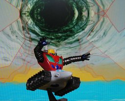

海洋堂 ダイナミックロボットミュージアム ゲッター３

男には選ばねばならないときがある。 ドリルを取るか。タンクを取るか。 それは男の一生を賭けた選択。 私はそのときタンクを選んだ。 ただ、それだけのこと。 それだけのことに過ぎないんだ。 海洋堂とタカラのダイナミックロボットミュージアムのゲッター３です。高さは台付きで 6cm ぐらいです。このシリーズは安くて小さいのにケッコー動きます。オススメです。 昔はゲッターロボＧに比べて、初代のゲッターはカッコ悪いなぁと思っていたのですが、今はこのシンプルさが良いです。 私がタンクを選んだのは、そのころ(再放送)からおデブちゃんだったこともありますが、３枚目というか「変な人」にあこがれてました。まぁ、ある意味「変な人」にはなれたのですが。orz 背景は Winamp の MilkDrop プラグインを WinShot したものです。 更新：2006-04-05,2006-04-13 初公開：2006年04月13日 02:45:27 最新版：2006年04月13日 03:30:37 Links: ダイナミックロボットミュージアム: http://www.takaratomy.co.jp/products/kt_figure/dynamicrobot/index.html MilkDrop: http://www.milkdrop.co.uk/ WinShot: http://www.woodybells.com/winshot.html